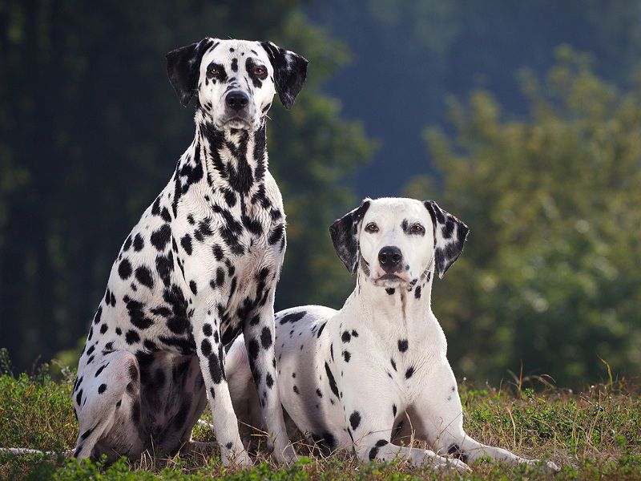

Ngoại hình
Chó Đốm có thân hình rất cân đối, cơ bắp rất phát triển và sức chịu đựng dẻo dai đáng kinh ngạc. Chúng có thể chạy bền hàng chục cây số mà không cần nghỉ hoặc tập những bài tập nặng nhọc mà hầu hết giống chó có cùng kích thước khác không thể thực hiện. Những chủ trại chó Đốm lớn nhất thế giới nói rằng: Dalmatian là giống chó sinh ra để chạy, chúng là một giống chó năng lượng cao và có sức bền bỉ dường như “vô tận”.
Hiện Thú Kiểng đang nhân giống chó Đốm đen – trắng và socola – trắng. Bên cạnh đó cũng nhập khẩu chó Đốm với các màu hiếm khác từ Thái Lan và từ châu Âu. Tất cả mọi bé Đốm tại Thú Kiểng đều đảm bảo sức khỏe, độ thuẩn chùng và được kiểm tra thính giác (vấn đề sức khỏe bẩm sinh ở chó Đốm) trước khi giao đến tay khách hàng.